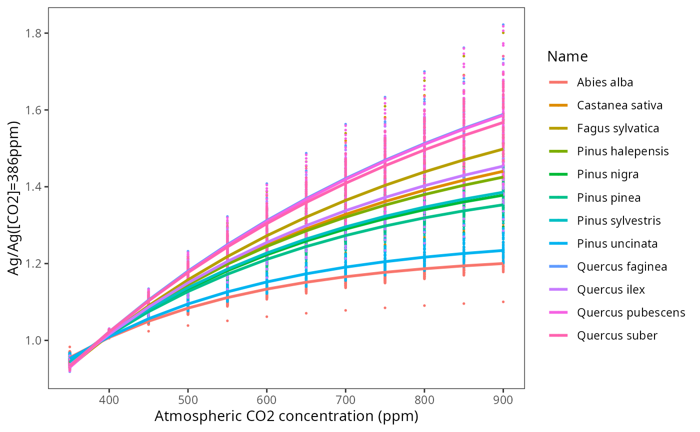

Meta-modelling exercise
Miquel De Cáceres
2024-07-26
Source:vignettes/parametrization/Metamodelling.Rmd
Metamodelling.RmdIntroduction
Goal
This document presents a meta-modelling exercise between basic
(Granier’s) and advanced (Sperry’s) versions of the soil plant water
balance model. The goal is to make transpiration and photosynthesis
predictions produced by the basic water balance model as similar as
possible to those produced by the advanced model which, given its
greater process detail and physical basis, is assumed to provide more
realistic and accurate predictions when appropriate functional traits
are supplied. The meta-modelling results should benefit not only water
balance simulations (function spwb) but also simulations of
forest growth (growth) and dynamics
(fordyn).
Target parameters
The following parameters are used in the basic model, that cannot easily be parameterized from available information (see https://emf-creaf.github.io/medfatebook/index.html):
-
Tmax_LAIandTmax_LAIsp, which determine the ratio of maximum transpiration over potential evapotranspiration for a given LAI. An empirical function with these parameters was derived by Granier (1999) for European temperate forests, without distinguishing between forests dominated by different species. -
Psi_ExtractandExp_Extract, which determine the actual transpiration as a fraction of maximum transpiration, as a function of soil water potential for a given layer. -
WUE, which represents the daily water use efficiency (g C of gross assimilation / l H2O transpired) under conditions of VPD = 1kPa, high photosynthetically active radiation (PAR) and no air CO2 limitations. -
WUE_par, which specifies the dependency of WUE on PAR. -
WUE_co2, which specifies the dependency of WUE on air CO2 concentration. -
WUE_vpd, which specifies the dependency of WUE on vapor pressure deficit (VPD).
As stated above, the general idea is to use simulation results issued
by the advanced water balance model to obtain appropriate species-level
estimates of the previous parameters, so that simulations with the basic
water balance model (which is faster) produce an output similar that of
the advanced model (which is slower). In the case of
Tmax_LAI and Tmax_LAIsp we aim to determine a
species-specific factor that can be used to modify the empirical
coefficients obtained by Granier (1999). Water use efficiency is an
emergent property of the advanced water balance model, depending on
multiple parameters (hydraulics, photosynthetic capacity, stomatal
conductance, etc). We can thus estimate WUE values (for
[CO2] = 386) using simulations with high light levels and no water
deficit. The decrease of WUE for plant cohorts in progressively shadier
environments with respect to WUE under full light can provide us with an
estimate of WUE_par, which again will depend on multiple
plant traits. Finally, we can use additional simulations of the complex
model under increasing [CO2] values to model the relationship between
gross photosynthesis at a given [CO2] compared to [CO2] = 386 for each
species.
Target species
The metamodelling procedure could be applied to any target species, but we focused on the main tree species in Catalonia: Pinus halepensis, Pinus sylvestris, Pinus nigra, Pinus uncinata, Pinus pinea, Quercus faginea, Quercus ilex, Quercus pubescens, Quercus suber, Fagus sylvatica and Abies alba.
For each of those species, we first revised the values of the most important parameters in the advanced water balance model (parameters of the hydraulic vulnerability curve are omitted as they should not be relevant in simulations without soil water deficit):| Name | SLA | Al2As | VCleaf_kmax | Kmax_stemxylem | Gswmax | Vmax298 | Jmax298 |
|---|---|---|---|---|---|---|---|
| Abies alba | 7.768174 | 7194.245 | 6 | 1.3000000 | 0.2300000 | 58.08712 | 103.28235 |
| Castanea sativa | 13.862317 | 5000.000 | 8 | 1.0000000 | 0.3500000 | 51.34505 | 93.03424 |
| Fagus sylvatica | 18.320000 | 2076.120 | 8 | 0.9000000 | 0.3350000 | 94.50000 | 159.90000 |
| Pinus halepensis | 5.140523 | 1317.523 | 4 | 0.1500000 | 0.2850000 | 72.19617 | 124.16865 |
| Pinus nigra | 4.569508 | 1272.265 | 5 | 0.4100000 | 0.2366667 | 68.50296 | 118.76713 |
| Pinus pinea | 4.207291 | 1615.509 | 4 | 0.2500000 | 0.2366667 | 72.42173 | 124.49715 |
| Pinus sylvestris | 4.897943 | 1598.180 | 5 | 0.4500000 | 0.2366667 | 83.00000 | 143.00000 |
| Pinus uncinata | 3.804390 | 1608.774 | 5 | 0.6895376 | 0.2366667 | 73.41275 | 125.93862 |
| Quercus pubescens | 11.800000 | 6031.582 | 6 | 0.7000000 | 0.2787500 | 57.33919 | 102.15484 |
| Quercus ilex | 6.340000 | 3908.823 | 4 | 0.4000000 | 0.2007222 | 68.51600 | 118.78628 |
| Quercus faginea | 8.328895 | 4189.325 | 6 | 0.7000000 | 0.2787500 | 71.21535 | 122.73836 |
| Quercus suber | 8.656130 | 4189.325 | 4 | 0.4000000 | 0.2862500 | 70.27833 | 121.36913 |
Ideally, the transpiration and photosynthesis predictions of the advanced water balance model should be evaluated with these parameterization before using it as reference for the meta-modelling study. Otherwise we could be biasing both models with inappropriate parameter values. At present, the advance water balance model has been evaluated using data from experimental plots in stands dominated by some of the target species, but not others.
Simulations for the meta-modelling exercise
Forest, soil and weather inputs
We used forest plot data from the third edition of the Spanish National Forest Inventory (IFN3). Forest plots were located in Catalonia and with a minimum basal area of 3 . For each target species we randomly selected up to 60 forest plots where the species was dominant (> 80% in basal area). Plant records corresponding to species different than the target species were excluded.
Like in other simulation exercises with IFN data, soil data was obtained from SoilGrids from plot coordinates, with rock fragment contents corrected according to the amount of surface stoniness recorded in the field sampling. Daily weather data corresponding to year 2000 was obtained by interpolation using package meteoland on the location of each forest plot.
Soil water balance simulations
For each target species, we ran the soil water balance model using
function spwb (actually, spwbpoints from
package medfateland) and either Granier’s or Sperry’s
transpiration mode. Simulations were conducted using
control$unlimitedSoilWater = TRUE so that transpiration and
photosynthesis estimates did not include soil water limitations (cohorts
in the shade were still affected by the lower PAR, however). For each
plant cohort in each simulated plot we recorded the percentage of PAR
available to the plant cohort, the annual transpiration and annual
photosynthesis produced by each model.
Additional simulations with increasing carbon dioxide concentration
were conducted using the Sperry transpiration mode and [CO2] values
increasing from 350 ppm to 900 ppm. We also avoided soil water
limitations using control$unlimitedSoilWater = TRUE. For
each plot we recorded the annual gross photosynthesis per leaf area
averaged across plant cohorts using their LAI as weights.
Transpiration ratio
We examined if there were systematic differences in annual transpiration (E) between the two models. Such differences should be species-specific. While the basic model has a single linear equation (from Granier) to estimate the ratio maximum transpiration (Tmax) to potential evapotranspiration (PET) from stand’s LAI and then divides plant transpiration among plant cohorts, the advanced model estimates cohort transpiration from a complex calculation involving several species-specific functional traits. The ratio between cohort annual E estimates from the two models could be used to scale the estimates of Granier’s equation (or in other words, to scale its parameters).
The following plot displays the ratio between cohort annual E estimates obtained using the basic and advanced models, where we use the percentage of PAR of the plant cohort in the x-axis to show whether the relationship changes between sunlit or shade cohorts:

Tmax_LAI = 0.134 and Tmax_LAIsq = -0.006).
| Name | n | E_ratio_mean | E_ratio_sd | E_ratio_se | Tmax_LAI | Tmax_LAIsq |
|---|---|---|---|---|---|---|
| Abies alba | 2030 | 0.5997430 | 0.1383160 | 0.0030699 | 0.0803656 | -0.0035985 |
| Fagus sylvatica | 1829 | 0.9725892 | 0.2056667 | 0.0048090 | 0.1303270 | -0.0058355 |
| Pinus halepensis | 1134 | 1.0334231 | 0.1978057 | 0.0058740 | 0.1384787 | -0.0062005 |
| Pinus nigra | 1542 | 0.9991212 | 0.2359977 | 0.0060099 | 0.1338822 | -0.0059947 |
| Pinus pinea | 1389 | 1.2293491 | 0.2822906 | 0.0075743 | 0.1647328 | -0.0073761 |
| Pinus sylvestris | 1696 | 0.9610576 | 0.1967708 | 0.0047780 | 0.1287817 | -0.0057663 |
| Pinus uncinata | 1776 | 1.0337017 | 0.2074468 | 0.0049225 | 0.1385160 | -0.0062022 |
| Quercus faginea | 668 | 0.9333797 | 0.2317702 | 0.0089675 | 0.1250729 | -0.0056003 |
| Quercus ilex | 1326 | 0.6825581 | 0.1838207 | 0.0050480 | 0.0914628 | -0.0040953 |
| Quercus pubescens | 1074 | 0.8681932 | 0.1844617 | 0.0056286 | 0.1163379 | -0.0052092 |
| Quercus suber | 1499 | 0.7808049 | 0.1162868 | 0.0030035 | 0.1046279 | -0.0046848 |
Relative transpiration function
## Warning: Removed 2262 rows containing missing values or values outside the scale range
## (`geom_point()`).
## Removed 2262 rows containing missing values or values outside the scale range
## (`geom_point()`).
Water use efficiency ([CO2] = 386)
Relationship between WUE and PAR
We estimated WUEg as the ratio between annual gross photosynthesis (Ag) and annual transpiration (E), both estimated using the advanced transpiration model. WUE values thus depend on the species identity (via functional traits) and on plot environmental factors (e.g. climatic conditions), as well as on the position of the plant within the canopy. We then estimate the maximum PAR and maximum WUE across cohorts for each plot, and calculate the relative WUE for each cohort as the ratio between WUE and the plot maximum value.
We want to build a model of the relative WUE as a function of available PAR, so that we can reduce species-level maximum WUE values for cohorts in the shadow. To fit such model we need good estimates of relative WUE, because this implies that the maximum WUE values correspond to high PAR. With this aim, we focus on those records corresponding to plots/species where at least 90% of PAR was available for at least one cohort of the species in the plot.
Using this selection, we then draw the relationship between PAR and
WUEg:

where we see that the relationship is species-specific. WUE is known to decrease for parts of the canopy receiving less light (e.g. Medrano et al. 2012). We can now plot relative WUE in relationship to FPAR:

Note that the relationship between relative WUE and PAR is less noisy than the relationship between absolute WUE and FPAR. For each species, we fit a non-linear model where relative WUE is a power function of FPAR:
We now draw again the previous plot with the species-specific fitted relationships, i.e. relative WUEg as a function of FPAR:

Note that there are substantial differences in the decay coefficients among species.

Dependency of photosynthesis on [CO2]

## Warning: Removed 39 rows containing missing values or values outside the scale range
## (`geom_point()`).## Warning in get_plot_component(plot, "guide-box"): Multiple components found;
## returning the first one. To return all, use `return_all = TRUE`.## `geom_smooth()` using formula = 'y ~ x'## Warning: Removed 2262 rows containing missing values or values outside the scale range
## (`geom_point()`).## Warning: Removed 2262 rows containing missing values or values outside the scale range
## (`geom_point()`).## Warning: Removed 39 rows containing missing values or values outside the scale range
## (`geom_point()`).## Warning: Removed 11913 rows containing missing values or values outside the scale range
## (`geom_point()`).Meta-modelling parameters
The table containing the five parameters estimated via meta-modelling is the following:| Name | Tmax_LAI | Tmax_LAIsq | Psi_Extract | Exp_Extract | WUE | WUE_par | WUE_co2 | WUE_vpd |
|---|---|---|---|---|---|---|---|---|
| Abies alba | 0.0803656 | -0.0035985 | -1.7218046 | 1.231947 | 7.216358 | 0.1940967 | 0.0044073 | -0.4327408 |
| Fagus sylvatica | 0.1303270 | -0.0058355 | -0.6284243 | 1.382918 | 7.924009 | 0.3216078 | 0.0023965 | -0.4432001 |
| Pinus halepensis | 0.1384787 | -0.0062005 | -0.8507809 | 1.470610 | 8.523012 | 0.6843513 | 0.0025178 | -0.3035192 |
| Pinus nigra | 0.1338822 | -0.0059947 | -1.0951387 | 1.237885 | 7.455548 | 0.2734095 | 0.0028326 | -0.5042817 |
| Pinus pinea | 0.1647328 | -0.0073761 | -0.9088451 | 1.616964 | 7.244992 | 0.5811822 | 0.0028907 | -0.3438728 |
| Pinus sylvestris | 0.1287817 | -0.0057663 | -1.0409725 | 1.256204 | 7.602625 | 0.3257445 | 0.0029864 | -0.4604605 |
| Pinus uncinata | 0.1385160 | -0.0062022 | -1.0041141 | 1.163380 | 5.546719 | 0.2538479 | 0.0037626 | -0.3255832 |
| Quercus faginea | 0.1250729 | -0.0056003 | -0.6533079 | 1.336029 | 7.866427 | 0.3322647 | 0.0021414 | -0.5563525 |
| Quercus ilex | 0.0914628 | -0.0040953 | -1.6598896 | 1.065300 | 8.447722 | 0.2523021 | 0.0027212 | -0.5791330 |
| Quercus pubescens | 0.1163379 | -0.0052092 | -0.6774252 | 1.419661 | 8.313443 | 0.3491013 | 0.0018287 | -0.5194150 |
| Quercus suber | 0.1046279 | -0.0046848 | -1.6637232 | 1.122908 | 9.935690 | 0.3996404 | 0.0018855 | -0.6335031 |
Evaluation of the effect of the new parameters
Here we evaluated whether the estimated parameters indeed increased the similarity of transpiration (E) and gross photosynthesis (Ag) estimates between the two models. To this aim we ran again the basic water balance model on all the forest plots but using the estimated parameters instead of the default values.
The following plots show the effect of the new parameters on annual E and annual Ag for plant cohorts of the plots included in the study:
## `geom_smooth()` using formula = 'y ~ x'
## `geom_smooth()` using formula = 'y ~ x'
## `geom_smooth()` using formula = 'y ~ x'
## `geom_smooth()` using formula = 'y ~ x'
## `geom_smooth()` using formula = 'y ~ x'
## `geom_smooth()` using formula = 'y ~ x'
## `geom_smooth()` using formula = 'y ~ x'